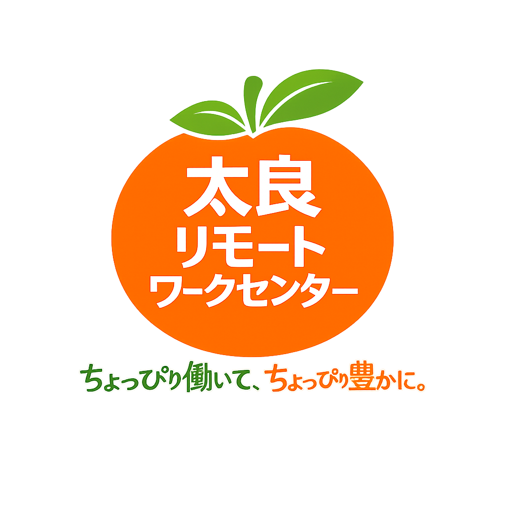

私たちの役割
太良リモートワークセンターは、都市部の企業が抱える「人手不足」「コスト負担」「作業の偏り」を、 地方人材による安心・高品質な業務アウトソーシングで支えることを目指しています。

太良リモートワークセンターは、首都圏・関西・福岡企業の業務を、佐賀県太良町から支援する団体です。 地方の人材と都市部の仕事をつなぎ、安心して発注できる業務体制と、太良町で働き続けられる選択肢の両立を目指します。
太良リモートワークセンターは、都市部の企業が抱える「人手不足」「コスト負担」「作業の偏り」を、 地方人材による安心・高品質な業務アウトソーシングで支えることを目指しています。
農業収入に加えた副収入、子育てと両立できる仕事、学業と並行できる就業機会など、 太良町の暮らしに合った働き方を増やすことを目標にしています。
企業ごとに必要な業務を切り出し、必要なときに必要な分だけ依頼できる体制を想定しています。
請求書、顧客リスト、各種入力作業など、定型的なバックオフィス業務を支援します。
記事作成、文字起こし、翻訳サポートなど、情報発信や制作の下支えとなる業務を担います。
商品登録、画像加工、在庫リスト整備など、EC運営に必要な実務をサポートします。
投稿作成、簡単な画像編集、数値分析の補助など、継続運用に必要な作業を支援します。
バナーリサイズや簡易編集など、日常運用の中で発生するクリエイティブ業務にも対応します。
定型業務の一部委託から継続案件まで、内容と頻度に応じて体制を組める構想です。
企業向けの支援内容、業務例、料金イメージ、特典案などをまとめた専用ページをご覧いただけます。
企業向けページを見る働き方のイメージ、向いている方、太良町で働くメリットなどをまとめた専用ページをご覧いただけます。
希望者向けページを見る都市部よりコストを抑えながら、品質保証を意識した体制づくりを目指しています。
必要な時期に必要な業務だけを依頼しやすい、扱いやすい窓口を想定しています。
ディレクションとレビュー体制を備え、継続的に信頼を積み上げる運営を目指します。
地方雇用の創出につながり、CSRやESGの文脈でも意味を持つ取り組みとして育てていきます。
リモートワーク案件の受注と地域人材の育成を両輪で進め、無理のない形で継続案件へつなげていく想定です。
首都圏・関西・福岡の企業から、切り出し可能な業務を受注します。
太良町民、農漁業従事者、主婦、学生などへ案件をつなぎ、必要に応じてレビューします。
継続発注の仕組みをつくり、登録者が安定して働ける仕事の流れを育てていきます。
ご相談・ご連絡は専用ページにまとめています。詳細はお問い合わせページをご覧ください。